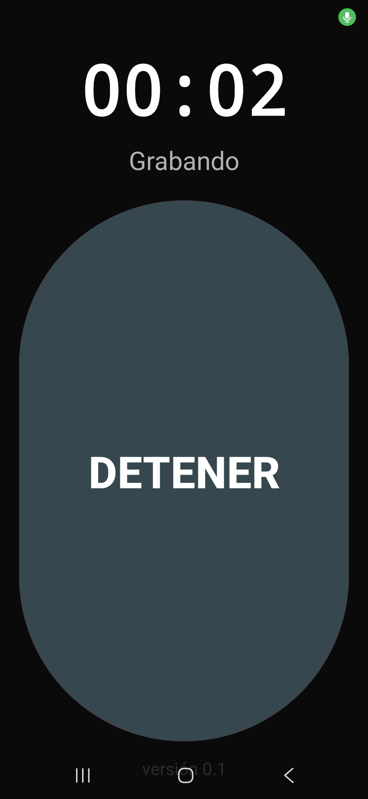

Ingeniero Electricista | Arquitecto de Soluciones con IA
Combino experiencia en ingeniería eléctrica, automatización y software para diseñar herramientas que calculan, verifican, documentan y ayudan a decidir. Tecnología aplicada a procesos reales, con resultados trazables.
Virtual o presencial en Córdoba Sin costo 15 minutos
Tu equipo pierde horas en tareas repetitivas que podrían automatizarse
Tu conocimiento técnico depende de tareas manuales difíciles de repetir
Escuchás hablar de IA pero no sabés cómo aplicarla a tu negocio real
Probaste herramientas sueltas pero no se conectan entre sí
Necesitás velocidad sin perder control, criterio profesional ni trazabilidad
La IA no reemplaza el criterio profesional. Bien integrada, permite convertir experiencia, normas y decisiones en procesos más rápidos, consistentes y verificables.
Un proceso claro para transformar conocimiento real en una herramienta confiable.
Relevo cómo se trabaja hoy, qué información entra, qué decisiones se toman y dónde aparecen errores, demoras o tareas repetitivas.
Convierto reglas, experiencia y documentos en un método claro: datos, cálculos, controles, alternativas y puntos que requieren decisión humana.
Construyo el sistema, lo pruebo contra casos reales y dejo visibles sus límites. La automatización avanza únicamente cuando el proceso demuestra que es confiable.
Herramienta propia · Normativa EPEC y CIEC
El desafío
Un proyecto eléctrico exige combinar información de entrada, normativa vigente, cálculos eléctricos y mecánicos, selección de alternativas, cómputos y documentación. Es un trabajo complejo donde cada supuesto debe quedar visible.
Lo que estoy construyendo
Un método ejecutable que recibe los datos de la obra, diseña alternativas, realiza cálculos, aplica controles normativos y prepara la documentación técnica. La IA participa dentro de un proceso gobernado por reglas de ingeniería.
Estado actual: los módulos principales ya ejecutan cálculos y controles sobre expedientes de referencia. El sistema continúa en proceso de evaluación antes de ofrecerse como servicio.
Soy Sergio Rojas, Ingeniero Electricista con más de 10 años de trayectoria en entornos técnicos e industriales.
Mi carrera me llevó desde la modernización de maquinaria CNC y sistemas de control hasta la gestión de proyectos eléctricos complejos. Esa experiencia me enseñó algo fundamental: la tecnología solo tiene valor cuando resuelve problemas reales y se integra a la operación del día a día.
Hoy combino ese rigor de ingeniería con las herramientas más avanzadas de IA y automatización para ayudar a empresas y profesionales a modernizar su operación sin depender de equipos técnicos internos.
No parto de una herramienta de moda. Parto del trabajo que hay que mejorar y construyo el sistema alrededor de ese proceso.
Un flujo que captura audio, fotos y videos con su momento exacto, transcribe la conversación y prepara un informe contrastando lo planeado con lo que realmente ocurrió.

Flujo probado con una reunión realSistemas que reciben información, ejecutan tareas repetitivas, conectan herramientas y dejan cada resultado preparado para revisión o decisión.
Diseño a medidaLa IA propone, organiza o ejecuta dentro de límites claros. Las decisiones sensibles conservan evidencia, controles y aprobación humana.
Automatización responsableUn proceso transparente en 4 pasos, desde la primera conversación hasta la entrega.
Conversamos sobre tu situación actual, tus dolores operativos y tus objetivos. Entiendo tu negocio antes de proponer nada.
Analizo tus procesos y te presento una propuesta concreta: qué vamos a construir, cómo, en cuánto tiempo y a qué inversión.
Diseño y construyo tu solución. Te mantengo informado del avance y te incluyo en las decisiones clave.
Te entrego el sistema funcionando, con documentación y capacitación para tu equipo. No te dejo solo.
Contame cómo trabajan hoy y qué resultado necesitás. En una primera conversación podemos identificar si la ingeniería, la automatización o la IA tienen sentido para tu caso.
Virtual o presencial en Córdoba · Sin costo · Sin compromiso